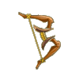

Menu barbok'you

Les Arc
| Niveau 1 | Petit Arc de Boisaille | |||
|---|---|---|---|---|
| # | Recettes : | Effets : | Caractéristiques : | Conditions : |
 |
1x Ficelle en Lin 4x Bois de Frêne |
Dommages : 1 à 4 (neutre) Vitalité : 1 |
PA : 4 Portée : 6 Bonus CC : +5 Critique : 1/30 Echec : 1/50 |
Force > 1 |
| Description : Arc de simple facture, il ne fera pas de votre héros une légende. | ||||
| Niveau 1 | Arc de l'initié | |||
|---|---|---|---|---|
| # | Recettes : | Effets : | Caractéristiques : | Conditions : |
 |
Dommages : 1 à 4 (neutre) Initiative : 10 |
PA : 4 Portée : 6 Bonus CC : +5 Critique : 1/50 Echec : 1/50 |
||
| Description : Cette arme d'apparence rudimentaire vous donnera l'impression de savoir vous battre. | ||||
| Niveau 2 | Arc de Boisaille | |||
|---|---|---|---|---|
| # | Recettes : | Effets : | Caractéristiques : | Conditions : |
 |
1x Ficelle en Lin 5x Bois de Frêne |
Dommages : 2 à 4 (neutre) Vitalité : 1 |
PA : 4 Portée : 6 Bonus CC : +5 Critique : 1/30 Echec : 1/50 |
Force > 2 |
| Description : Arc de simple facture, il ne fera pas de votre héros une légende. | ||||
| Niveau 3 | Grand Arc de Boisaille | |||
|---|---|---|---|---|
| # | Recettes : | Effets : | Caractéristiques : | Conditions : |
 |
1x Ficelle en Lin 6x Bois de Frêne |
Dommages : 2 à 5 (neutre) Vitalité : 1 |
PA : 4 Portée : 6 Bonus CC : +5 Critique : 1/30 Echec : 1/50 |
Force > 3 |
| Description : Arc de simple facture, il ne fera pas de votre héros une légende. | ||||
| Niveau 4 | Puissant Arc de Boisaille | |||
|---|---|---|---|---|
| # | Recettes : | Effets : | Caractéristiques : | Conditions : |
|  | 1x Ficelle en Lin 7x Bois de Frêne |
Dommages : 3 à 5 (neutre) Vitalité : 1 |
PA : 4 Portée : 6 Bonus CC : +5 Critique : 1/30 Echec : 1/50 |
Force > 4 |
| Description : Arc de simple facture, il ne fera pas de votre héros une légende. | ||||
| Niveau 8 | Arc Hade | |||
|---|---|---|---|---|
| # | Recettes : | Effets : | Caractéristiques : | Conditions : |
 |
4x Bois de Frêne 2x Bois de Noyer |
Dommages : 3 à 5 (neutre) Intelligence : 1 |
PA : 4 Portée : 5 Bonus CC : +5 Critique : 1/30 Echec : 1/50 |
Agilité > 8 |
| Description : À cause de sa faible portée, cet arc n'est pas très efficace, mais il permet tout de même d'affaiblir suffisamment l'ennemi avant de l'achever avec une autre arme ou magie. | ||||
| Niveau 10 | Arc de Mulic Bere | |||
|---|---|---|---|---|
| # | Recettes : | Effets : | Caractéristiques : | Conditions : |
 |
Dommages : 31 à 50 (terre) Force : -250 |
PA : 6 Portée : 23 Bonus CC : +0 Critique : 1/0 Echec : 1/30 |
||
| Description : Cet arc est une invention du génial Mulic Bere. Sa portée maximum est tout bonnement incroyable. Le problème c'est que la portée minimum est presque aussi grande. | ||||
| Niveau 10 | Arc de Mech Riorraw | |||
|---|---|---|---|---|
| # | Recettes : | Effets : | Caractéristiques : | Conditions : |
 |
Dommages : 31 à 50 (air) Agilité : -250 |
PA : 6 Portée : 21 Bonus CC : +0 Critique : 1/0 Echec : 1/30 |
Alignement doit etre Bonta |
|
| Description : Cet arc a été conçu par Mech Riorraw, il est calibré pour pouvoir traverser la rivière de lave et atteindre le haut des murailles de Brâkmar, ni plus, ni moins. | ||||
| Niveau 11 | Arc Sifflant | |||
|---|---|---|---|---|
| # | Recettes : | Effets : | Caractéristiques : | Conditions : |
 |
1x Ficelle en Lin 2x Bois de Chêne 3x Bois d'Erable |
Dommages : 3 à 5 (neutre) Initiative : 10 |
PA : 3 Portée : 6 Bonus CC : +5 Critique : 1/30 Echec : 1/40 |
Agilité > 11 Force > 5 |
| Description : Cet arc tire si rapidement ses flèches, que l'on entend ces dernières partir de très loin. Pensez donc à l'équiper d'un silencieux, si c'est la discrétion que vous recherchez. | ||||
| Niveau 14 | Petit Arc Déroutant | |||
|---|---|---|---|---|
| # | Recettes : | Effets : | Caractéristiques : | Conditions : |
 |
1x Ficelle en Lin 7x Bois de Noyer 7x Bois de Châtaignier |
Dommages : 3 à 7 (neutre) Agilité : 1 |
PA : 4 Portée : 6 Bonus CC : +10 Critique : 1/30 Echec : 1/50 |
Agilité > 14 Force > 4 |
| Description : L'arc déroutant est un objet de base, mais son utilité n'est pas à négliger. | ||||
| Niveau 15 | Arc Holic | |||
|---|---|---|---|---|
| # | Recettes : | Effets : | Caractéristiques : | Conditions : |
 |
1x Potion de Crachin 10x Eau 8x Bois de Chêne |
Dommages : 5 à 14 (eau) Agilité : -1 à -30 |
PA : 5 Portée : 6 Bonus CC : +5 Critique : 1/30 Echec : 1/50 |
|
| Description : Cet arc a été créé par un magicien porté sur la bouteille. Afin de résoudre son problème, il a inventé cet arc spécialisé dans l'eau. | ||||
| Niveau 15 | Petit Arc Buse | |||
|---|---|---|---|---|
| # | Recettes : | Effets : | Caractéristiques : | Conditions : |
 |
2x Ficelle en Lin 4x Bois de Frêne 7x Plumes de Tofu |
Dommages : 4 à 7 (neutre) Force : 10 Agilité : 7 Chance : -5 |
PA : 4 Portée : 6 Bonus CC : +10 Critique : 1/30 Echec : 1/50 |
Agilité > 15 Force > 20 |
| Description : Cet arc est spécialement conçu pour chasser les oiseaux. Léger et facile à manier, il vous permettra de voler dans les plumes de n'importe qui ou presque. | ||||
| Niveau 16 | Arc Déroutant | |||
|---|---|---|---|---|
| # | Recettes : | Effets : | Caractéristiques : | Conditions : |
 |
1x Ficelle en Lin 9x Bois de Châtaignier 8x Bois de Noyer |
Dommages : 3 à 7 (neutre) Agilité : 4 |
PA : 4 Portée : 6 Bonus CC : +10 Critique : 1/30 Echec : 1/50 |
Agilité > 16 Force > 6 |
| Description : L'arc déroutant est un objet de base, mais son utilité n'est pas à négliger. | ||||
| Niveau 18 | Arc Buse | |||
|---|---|---|---|---|
| # | Recettes : | Effets : | Caractéristiques : | Conditions : |
 |
2x Ficelle en Lin 4x Bois de Frêne 9x Plumes de Tofu |
Dommages : 5 à 8 (neutre) Force : 12 Agilité : 10 Chance : -5 |
PA : 4 Portée : 6 Bonus CC : +10 Critique : 1/30 Echec : 1/50 |
Agilité > 17 Force > 28 |
| Description : Cet arc est spécialement conçu pour chasser les oiseaux. Léger et facile à manier, il vous permettra de voler dans les plumes de n'importe qui ou presque. | ||||
| Niveau 18 | Grand Arc Déroutant | |||
|---|---|---|---|---|
| # | Recettes : | Effets : | Caractéristiques : | Conditions : |
 |
1x Ficelle en Lin 10x Bois de Châtaignier 10x Bois de Noyer |
Dommages : 3 à 7 (neutre) Agilité : 7 |
PA : 4 Portée : 6 Bonus CC : +10 Critique : 1/30 Echec : 1/50 |
Agilité > 18 Force > 8 |
| Description : L'arc déroutant est un objet de base, mais son utilité n'est pas à négliger. | ||||
| Niveau 18 | Petit Arc Ecologique | |||
|---|---|---|---|---|
| # | Recettes : | Effets : | Caractéristiques : | Conditions : |
 |
1x Ficelle en Lin 4x Bourgeon d'Abraknyde 3x Bois de Châtaignier |
Dommages : 4 à 6 (neutre) Intelligence : 15 Agilité : 10 Chance : -5 |
PA : 6 Portée : 8 Bonus CC : +10 Critique : 1/30 Echec : 1/50 |
Intelligence > 20 Agilité > 15 |
| Description : Le plan de fabrication de cet arc 100% biodégradable fut retrouvé au fond des ruines de Din par un aventurier apparemment célèbre pour son fouet. Rien ne dit s'il a troqué sa vieille babiole claquante contre ce magnifique arc. | ||||
| Niveau 19 | Puissant Arc Déroutant | |||
|---|---|---|---|---|
| # | Recettes : | Effets : | Caractéristiques : | Conditions : |
 |
1x Ficelle en Lin 11x Bois de Noyer 12x Bois de Châtaignier |
Dommages : 3 à 7 (neutre) Chance : 10 |
PA : 4 Portée : 6 Bonus CC : +10 Critique : 1/30 Echec : 1/50 |
Agilité > 19 Force > 9 |
| Description : L'arc déroutant est un objet de base, mais son utilité n'est pas à négliger. | ||||
| Niveau 20 | Arc du Bwork Archer | |||
|---|---|---|---|---|
| # | Recettes : | Effets : | Caractéristiques : | Conditions : |
 |
1x Ficelle en Lin 1x Pointe de Flèche du Bwork Archer 5x Bois d'Ebène 2x Bois de Chêne |
Dommages : 6 à 10 (neutre) Force : 10 Intelligence : -2 |
PA : 5 Portée : 7 Bonus CC : +10 Critique : 1/30 Echec : 1/50 |
Force > 20 Agilité > 20 |
| Description : C'est un arc très simple à utiliser, il a été conçu pour s'adapter à l'intelligence d'un Bwork Archer, ce qui le rend presque utilisable par un Tofu. En revanche, il nécessite une force de Craqueleur pour être bandé. | ||||
| Niveau 21 | Grand Arc Buse | |||
|---|---|---|---|---|
| # | Recettes : | Effets : | Caractéristiques : | Conditions : |
 |
2x Ficelle en Lin 10x Plumes de Tofu 5x Bois de Frêne 2x Bois de Châtaignier |
Dommages : 6 à 9 (neutre) Force : 14 Agilité : 12 Chance : -5 |
PA : 4 Portée : 6 Bonus CC : +10 Critique : 1/30 Echec : 1/50 |
Agilité > 20 Force > 31 |
| Description : Cet arc est spécialement conçu pour chasser les oiseaux. Léger et facile à manier, il vous permettra de voler dans les plumes de n'importe qui ou presque. | ||||
| Niveau 22 | Arc Hancihaile | |||
|---|---|---|---|---|
| # | Recettes : | Effets : | Caractéristiques : | Conditions : |
 |
1x Ficelle en Lin 2x Bois d'Ebène 5x Bois d'If 1x Bois de Chêne |
Dommages : 2 à 6 (neutre) Chance : 21 à 30 |
PA : 5 Portée : 11 Bonus CC : +10 Critique : 1/30 Echec : 1/50 |
Agilité > 22 Chance > 15 |
| Description : C'est l'arc le plus recherché de tout Amakna, on raconte que là où ses flèches retombent, on peut trouver un trésor. Étrangement, il ne semble être efficace que lorsque pluie et rayons de soleil se mêlent. | ||||
| Niveau 23 | Arc Ecologique | |||
|---|---|---|---|---|
| # | Recettes : | Effets : | Caractéristiques : | Conditions : |
 |
1x Ficelle en Lin 6x Bourgeon d'Abraknyde 3x Bois de Châtaignier 3x Bois de Noyer |
Dommages : 5 à 8 (neutre) Intelligence : 20 Agilité : 15 Chance : -7 |
PA : 6 Portée : 8 Bonus CC : +10 Critique : 1/30 Echec : 1/50 |
Intelligence > 25 Agilité > 17 |
| Description : Le plan de fabrication de cet arc 100% biodégradable fut retrouvé au fond des ruines de Din par un aventurier apparemment célèbre pour son fouet. Rien ne dit s'il a troqué sa vieille babiole claquante contre ce magnifique arc. | ||||
| Niveau 24 | Puissant Arc Buse | |||
|---|---|---|---|---|
| # | Recettes : | Effets : | Caractéristiques : | Conditions : |
 |
2x Ficelle en Lin 11x Plumes de Tofu 6x Bois de Frêne 2x Bois de Châtaignier |
Dommages : 6 à 10 (neutre) Force : 16 Agilité : 14 Chance : -5 |
PA : 4 Portée : 6 Bonus CC : +10 Critique : 1/30 Echec : 1/50 |
Agilité > 23 Force > 33 |
| Description : Cet arc est spécialement conçu pour chasser les oiseaux. Léger et facile à manier, il vous permettra de voler dans les plumes de n'importe qui ou presque. | ||||
| Niveau 28 | Nomoon | |||
|---|---|---|---|---|
| # | Recettes : | Effets : | Caractéristiques : | Conditions : |
 |
2x Bois d'Ebène 1x Ficelle en Lin 5x Bois de Merisier 5x Argent |
Dommages : 4 à 8 (neutre) Vitalité : 20 Coup critiques : +1 Force : -10 |
PA : 5 Portée : 12 Bonus CC : +10 Critique : 1/30 Echec : 1/50 |
Agilité > 28 Vitalité > 5 |
| Description : Cet arc est assez puissant pour envoyer une flèche sur la lune. | ||||
| Niveau 28 | Arc en Racine d'Abraknyde | |||
|---|---|---|---|---|
| # | Recettes : | Effets : | Caractéristiques : | Conditions : |
 |
1x Ficelle en Lin 10x Racine d'Abraknyde 2x Ambre d'Abraknyde 1x Bois d'If |
Dommages : 3 à 7 (neutre) Sagesse : 15 PA : +1 Vitalité : -66 |
PA : 4 Portée : 7 Bonus CC : +10 Critique : 1/30 Echec : 1/50 |
Force > 10 Agilité > 28 |
| Description : Le bois d'Abraknyde étant toujours vivant une fois coupé, cet arc est très difficile à utiliser. Cependant, il n'y a pas mieux pour ridiculiser un Abraknyde, que de le tuer avec un arc issu des racines de ses propres frères. | ||||
| Niveau 28 | Grand Arc Ecologique | |||
|---|---|---|---|---|
| # | Recettes : | Effets : | Caractéristiques : | Conditions : |
 |
1x Ficelle en Lin 8x Bourgeon d'Abraknyde 4x Bois de Châtaignier 4x Bois de Noyer |
Dommages : 7 à 12 (neutre) Intelligence : 25 Agilité : 20 Chance : -9 |
PA : 6 Portée : 8 Bonus CC : +10 Critique : 1/30 Echec : 1/50 |
Intelligence > 30 Agilité > 20 |
| Description : Le plan de fabrication de cet arc 100% biodégradable fut retrouvé au fond des ruines de Din par un aventurier apparemment célèbre pour son fouet. Rien ne dit s'il a troqué sa vieille babiole claquante contre ce magnifique arc. | ||||
| Niveau 29 | Petit Arc en Corne de Bouftou | |||
|---|---|---|---|---|
| # | Recettes : | Effets : | Caractéristiques : | Conditions : |
 |
2x Ficelle en Lin 1x Bois d'If 6x Corne de Bouftou 5x Fer 4x Bois de Châtaignier |
Dommages : 7 à 10 (neutre) Force : 16 à 25 Sagesse : 6 à 10 Vitalité : -1 à -10 |
PA : 5 Portée : 8 Bonus CC : +10 Critique : 1/30 Echec : 1/50 |
Force > 45 Agilité > 5 |
| Description : "Avec un Bouftou, on peut faire tout !" tel était le slogan d'un marchand dont la spécialité était le recyclage de Bouftou. Cet arc est l'un de ses produits. Pas très esthétique, il n'en est pas moins redoutable. | ||||
| Niveau 30 | Arc du Xueluom | |||
|---|---|---|---|---|
| # | Recettes : | Effets : | Caractéristiques : | Conditions : |
 |
1x Ficelle en Lin 1x Magnésite 12x Bois de Châtaignier 8x Bois d'Erable 8x Bois de Chêne |
Dommages : 1 à 30 (eau) Chance : 1 à 10 |
PA : 5 Portée : 6 Bonus CC : +10 Critique : 1/10 Echec : 1/10 |
Chance > 30 |
| Description : "Avec un arc, ça passe ou ça casse", dit le proverbe. Les sages éviteront cet arc, il serait soi-disant porteur du mauvais oeil... | ||||
| Niveau 30 | Arc de Triomphe | |||
|---|---|---|---|---|
| # | Recettes : | Effets : | Caractéristiques : | Conditions : |
 |
1x Ficelle en Lin 1x Or 3x Bois de Merisier 2x Bois d'Ebène 2x Bois d'If |
Dommages : 6 à 10 (neutre) Chance : 10 Coup critiques : +1 Agilité : 10 Intelligence : -4 Force : -4 |
PA : 4 Portée : 10 Bonus CC : +10 Critique : 1/30 Echec : 1/50 |
Agilité > 30 Chance > 5 Force > 10 |
| Description : Comme son nom l'indique, cet arc permet de gagner facilement un combat. Un grand architecte Crâ sans imagination a même utilisé le nom de cet arc pour nommer une de ses constructions. | ||||
| Niveau 30 | Arc Plass'Tik' | |||
|---|---|---|---|---|
| # | Recettes : | Effets : | Caractéristiques : | Conditions : |
 |
Dommages : 5 à 12 (air) |
PA : 5 Portée : 6 Bonus CC : +5 Critique : 1/35 Echec : 1/45 |
Agilité > 30 Vitalité > 30 |
|
| Description : Cette arme est une Shushette, elle est capable de voler les fragments d'âmes des Shushus de Rushu que possèdent les monstres. Une fois que vous les aurez récupérés, vous pourrez tenter de les incruster directement sur l'arme afin de la rendre plus puissante. | ||||
| Niveau 30 | Arc de Jeanne | |||
|---|---|---|---|---|
| # | Recettes : | Effets : | Caractéristiques : | Conditions : |
 |
1x Ficelle en Lin 5x Bois d'Ebène 5x Bois d'If 2x Bois de Merisier 1x Bois d'Erable |
Dommages : 2 à 16 (neutre) Portée : +1 Est une arme de chasse |
PA : 4 Portée : 9 Bonus CC : +10 Critique : 1/30 Echec : 1/50 |
Force > 10 Agilité > 30 |
| Description : Jeanne était un peu folle, elle entendait des Tabis roter dans sa tête. Pour éviter qu'elle ne se blesse avec son arc, il lui a été confisqué et on a décidé de la brûler vive pour réchauffer l'ambiance lors de l'inauguration de la taverne. | ||||
| Niveau 32 | Arc en Corne de Bouftou | |||
|---|---|---|---|---|
| # | Recettes : | Effets : | Caractéristiques : | Conditions : |
 |
2x Ficelle en Lin 1x Bois d'If 8x Corne de Bouftou 6x Fer 4x Bois de Châtaignier |
Dommages : 7 à 11 (neutre) Force : 19 à 28 Sagesse : 6 à 10 Vitalité : -1 à -10 |
PA : 5 Portée : 8 Bonus CC : +10 Critique : 1/30 Echec : 1/50 |
Force > 44 Agilité > 8 |
| Description : "Avec un Bouftou, on peut faire tout !" tel était le slogan d'un marchand dont la spécialité était le recyclage de Bouftou. Cet arc est l'un de ses produits, pas très esthétique il n'en est pas moins redoutable. | ||||
| Niveau 33 | Célèbre Arc Ecologique | |||
|---|---|---|---|---|
| # | Recettes : | Effets : | Caractéristiques : | Conditions : |
 |
1x Ficelle en Lin 10x Bourgeon d'Abraknyde 4x Bois de Châtaignier 3x Bois de Chêne 4x Bois de Noyer |
Dommages : 8 à 14 (neutre) Intelligence : 26 Agilité : 25 Chance : -10 |
PA : 6 Portée : 8 Bonus CC : +10 Critique : 1/30 Echec : 1/50 |
Intelligence > 35 Agilité > 23 |
| Description : Le plan de fabrication de cet arc 100% biodégradable fut retrouvé au fond des ruines de Din par un aventurier apparemment célèbre pour son fouet. Rien ne dit s'il a troqué sa vieille babiole claquante contre ce magnifique arc. | ||||
| Niveau 33 | La Corde de Yamato | |||
|---|---|---|---|---|
| # | Recettes : | Effets : | Caractéristiques : | Conditions : |
 |
1x Ficelle en Lin 5x Bois d'Ebène 1x Cuivre 5x Bois d'If 5x Bois de Merisier |
Dommages : 1 à 15 (neutre) Force : 20 Portée : +1 Intelligence : -14 |
PA : 4 Portée : 7 Bonus CC : +10 Critique : 1/30 Echec : 1/50 |
Agilité > 33 Force > 10 |
| Description : La Corde de Yamato a fait vibrer plus d'un coeur de monstre. Arme fine, elle est capable de diriger sa flèche dans les endroits les plus cachés. | ||||
| Niveau 35 | Arc Lourd en Corne de Bouftou | |||
|---|---|---|---|---|
| # | Recettes : | Effets : | Caractéristiques : | Conditions : |
 |
2x Ficelle en Lin 1x Bois d'If 10x Corne de Bouftou 7x Fer 4x Bois de Châtaignier |
Dommages : 8 à 12 (neutre) Force : 21 à 30 Sagesse : 6 à 10 Vitalité : -1 à -10 |
PA : 5 Portée : 8 Bonus CC : +10 Critique : 1/30 Echec : 1/50 |
Force > 47 Agilité > 10 |
| Description : "Avec un Bouftou, on peut faire tout !" tel était le slogan d'un marchand dont la spécialité était le recyclage de Bouftou. Cet arc est l'un de ses produits, pas très esthétique il n'en est pas moins redoutable. | ||||
| Niveau 35 | Arc dit Kéha, version soldée | |||
|---|---|---|---|---|
| # | Recettes : | Effets : | Caractéristiques : | Conditions : |
 |
1x Ficelle en Lin 1x Pierre à Aiguiser 8x Manganèse 4x Planche en Frêne 4x Bois d'Erable |
Dommages : 3 à 12 (neutre) Agilité : 21 à 40 Intelligence : 1 à 20 Force : 1 à 20 Sagesse : -1 à -15 |
PA : 4 Portée : 7 Bonus CC : +12 Critique : 1/50 Echec : 1/50 |
Agilité > 40 Force > 2 Intelligence > 2 |
| Description : Type d'arc fabriqué seulement dans le grand nord d'Amakna, le Kéha est un arc peu cher, à monter soi-même. Ses performances dépendent ainsi fortement de la maîtrise de l'assembleur. | ||||
| Niveau 36 | Corde d'Ivan Nowé | |||
|---|---|---|---|---|
| # | Recettes : | Effets : | Caractéristiques : | Conditions : |
 |
6x Bois d'Ebène 7x Bois d'If 1x Ficelle en Lin 1x Bois de Merisier 7x Bois de Chêne |
Dommages : 4 à 8 (neutre) Force : 10 Chance : 15 Intelligence : 15 Vitalité : -10 |
PA : 4 Portée : 7 Bonus CC : +10 Critique : 1/15 Echec : 1/50 |
Force > 30 Agilité > 36 |
| Description : Cet arc a appartenu à Ivan Nowé, un Crâ téméraire, qui a pourfendu plus d'un Tofu égaré. Cet arc a la particularité de faire des coups pour le moins surprenants qui laissent perplexes puis agonisants les ennemis. | ||||
| Niveau 38 | Arc de Cristal Opaque | |||
|---|---|---|---|---|
| # | Recettes : | Effets : | Caractéristiques : | Conditions : |
 |
1x Ficelle en Lin 1x Cristal 1x Petit Arc de Boisaille 1x Oeuf de Dragoeuf Blanc 10x Poudre de Perlinpainpain |
Dommages : 8 à 12 (neutre) Intelligence : 15 Vitalité : -20 Résistance : 1 (terre) Résistance : 1 (neutre) Résistance : 1 (eau) Résistance : 1 (air) Résistance : 1 (feu) |
PA : 5 Portée : 8 Bonus CC : +10 Critique : 1/30 Echec : 1/50 |
Intelligence > 35 Agilité > 10 |
| Description : Prenez un vieil arc usé, saupoudrez-le de poudre de perlinpinpin, demandez à un dragon de souffler sur le tout et vous obtenez un arc enchanteur. Cette recette de conte ne marche pas vraiment, les dragons visant étrangement toujours à coté. | ||||
| Niveau 38 | Arc Royal en Corne de Bouftou | |||
|---|---|---|---|---|
| # | Recettes : | Effets : | Caractéristiques : | Conditions : |
 |
2x Ficelle en Lin 1x Bois d'If 12x Corne de Bouftou 8x Fer 4x Bois de Châtaignier |
Dommages : 8 à 13 (neutre) Force : 26 à 35 Sagesse : 6 à 10 Vitalité : -1 à -10 |
PA : 5 Portée : 8 Bonus CC : +10 Critique : 1/30 Echec : 1/50 |
Force > 50 Agilité > 12 |
| Description : "Avec un Bouftou, on peut faire tout !" tel était le slogan d'un marchand dont la spécialité était le recyclage de Bouftou. Cet arc est l'un de ses produits, pas très esthétique il n'en est pas moins redoutable. | ||||
| Niveau 39 | Arc dit Kéha, version standard | |||
|---|---|---|---|---|
| # | Recettes : | Effets : | Caractéristiques : | Conditions : |
 |
1x Ficelle en Lin 2x Pierre à Aiguiser 10x Manganèse 4x Planche en Frêne 4x Bois d'Erable |
Dommages : 3 à 14 (neutre) Agilité : 21 à 42 Force : 1 à 22 Intelligence : 1 à 22 Sagesse : -2 à -16 |
PA : 4 Portée : 7 Bonus CC : +13 Critique : 1/50 Echec : 1/50 |
Agilité > 40 Force > 4 Intelligence > 4 |
| Description : Type d'arc fabriqué seulement dans le grand nord d'Amakna, le Kéha est un arc peu cher, à monter soi-même. Ses performances dépendent ainsi fortement de la maîtrise de l'assembleur. | ||||
| Niveau 39 | Abrarc | |||
|---|---|---|---|---|
| # | Recettes : | Effets : | Caractéristiques : | Conditions : |
 |
25x Ecorce d'Abraknyde 25x Racine d'Abraknyde 25x Bourgeon d'Abraknyde 2x Ecorce d'Abraknyde Sombre 2x Racine d'Abraknyde Sombre |
Dommages : 11 à 15 (neutre) Créature invocables : +1 Chance : 21 à 30 |
PA : 4 Portée : 5 Bonus CC : +5 Critique : 1/50 Echec : 1/30 |
|
| Description : Cet arc semble encore vivant et peut presque tirer des flèches tout seul, comme un grand. Il aurait pu être l'arc idéal des personnes dotées de deux mains gauches, mais malheureusement, il faut toujours encocher la flèche dans le bon sens. | ||||
| Niveau 40 | Arc Hord'Eon' | |||
|---|---|---|---|---|
| # | Recettes : | Effets : | Caractéristiques : | Conditions : |
 |
Dommages : 8 à 15 (feu) |
PA : 5 Portée : 6 Bonus CC : +5 Critique : 1/35 Echec : 1/45 |
Intelligence > 40 Vitalité > 40 |
|
| Description : Cette arme est une Shushette, elle est capable de voler les fragments d'âmes des Shushus de Rushu que possèdent les monstres. Une fois que vous les aurez récupérés, vous pourrez tenter de les incruster directement sur l'arme afin de la rendre plus puissante. | ||||
| Niveau 40 | Arc Hidsad | |||
|---|---|---|---|---|
| # | Recettes : | Effets : | Caractéristiques : | Conditions : |
 |
5x Bois d'Oliviolet 20x Bois de Frêne 1x Ficelle en Lin 10x Bois de Châtaignier 8x Bois de Chêne |
Dommages : 12 à 42 (air) Vitalité : -100 PV rendus : 12 à 42 Intelligence : -1 à -40 |
PA : 5 Portée : 7 Bonus CC : +5 Critique : 1/30 Echec : 1/50 |
|
| Description : Le créateur de cet arc, un certain Marc Hidsad, n'a jamais très bien su s'en servir. Il pouvait tout autant infliger de sévères blessures à ses ennemis que de se blesser lui-même. | ||||
| Niveau 41 | Arc à Poulie Sciée | |||
|---|---|---|---|---|
| # | Recettes : | Effets : | Caractéristiques : | Conditions : |
 |
8x Ecorce d'Abraknyde 2x Tronc de Kokoko 6x Bois de Charme 8x Bois de Châtaignier 1x Ficelle en Lin |
Dommages : 9 à 18 (feu) Vitalité : 1 à 40 Sagesse : 1 à 10 Coup critiques : +1 |
PA : 5 Portée : 8 Bonus CC : +10 Critique : 1/30 Echec : 1/50 |
Alignement doit etre Bonta Intelligence > 10 Intelligence > 30 Sagesse > 30 |
| Description : Cet arc, dont toutes les poulies ont été sciées, était, il y a fort longtemps, le symbole de la lutte du bien contre le mal. Encore aujourd'hui, on peut sentir en lui la flamme des anciens justiciers. |
||||
| Niveau 43 | Arc dit Kéha, version spéciale | |||
|---|---|---|---|---|
| # | Recettes : | Effets : | Caractéristiques : | Conditions : |
 |
1x Ficelle en Lin 3x Pierre à Aiguiser 12x Manganèse 4x Planche en Frêne 4x Bois d'Erable |
Dommages : 3 à 16 (neutre) Agilité : 21 à 45 Force : 1 à 25 Intelligence : 1 à 25 Sagesse : -3 à -17 |
PA : 4 Portée : 7 Bonus CC : +14 Critique : 1/50 Echec : 1/50 |
Agilité > 40 Force > 9 Intelligence > 9 |
| Description : Type d'arc fabriqué seulement dans le grand nord d'Amakna, le Kéha est un arc peu cher, à monter soi-même. Ses performances dépendent ainsi fortement de la maîtrise de l'assembleur. | ||||
| Niveau 44 | Arc de Cristal | |||
|---|---|---|---|---|
| # | Recettes : | Effets : | Caractéristiques : | Conditions : |
 |
1x Ficelle en Lin 1x Cristal 1x Arc de Boisaille 1x Oeuf de Dragoeuf Blanc 20x Poudre de Perlinpainpain |
Dommages : 9 à 14 (neutre) Intelligence : 20 Vitalité : -25 Résistance : 1 à 2 (terre) Résistance : 1 à 2 (neutre) Résistance : 1 à 2 (eau) Résistance : 1 à 2 (air) Résistance : 1 à 2 (feu) |
PA : 5 Portée : 8 Bonus CC : +10 Critique : 1/30 Echec : 1/50 |
Intelligence > 40 Agilité > 10 |
| Description : Prenez un vieil arc usé, saupoudrez-le de poudre de perlinpinpin, demandez à un dragon de souffler sur le tout et vous obtenez un arc enchanteur. Cette recette de conte ne marche pas vraiment, les dragons visant étrangement toujours à coté. | ||||
| Niveau 46 | Arc des Rivages | |||
|---|---|---|---|---|
| # | Recettes : | Effets : | Caractéristiques : | Conditions : |
 |
4x Bois de Bombu 4x Tronc de Kokoko 4x Bois d'Oliviolet 1x Ficelle en Lin 5x Racine d'Abraknyde |
Dommages : 1 à 15 (neutre) Augmente les dommages de 6 à 10% Agilité : 11 à 30 |
PA : 4 Portée : 10 Bonus CC : +10 Critique : 1/30 Echec : 1/45 |
Agilité > 46 |
| Description : Cet arc permettait aux pêcheurs de nettoyer les rivages de toute la vermine environnante sans avoir à se lever de leur siège, et cela depuis la fenêtre du bar des pirates. | ||||
| Niveau 47 | Arc dit Kéha, nouvelle version | |||
|---|---|---|---|---|
| # | Recettes : | Effets : | Caractéristiques : | Conditions : |
 |
1x Ficelle en Lin 14x Manganèse 4x Planche en Frêne 4x Bois d'Erable 4x Pierre à Aiguiser |
Dommages : 4 à 19 (neutre) Agilité : 21 à 50 Force : 1 à 30 Intelligence : 1 à 30 Sagesse : -3 à -19 |
PA : 4 Portée : 7 Bonus CC : +15 Critique : 1/50 Echec : 1/50 |
Agilité > 40 Force > 11 Intelligence > 11 |
| Description : Type d'arc fabriqué seulement dans le grand nord d'Amakna, le Kéha est un arc peu cher, à monter soi-même. Ses performances dépendent ainsi fortement de la maîtrise de l'assembleur. | ||||
| Niveau 50 | Arc de Cristal Translucide | |||
|---|---|---|---|---|
| # | Recettes : | Effets : | Caractéristiques : | Conditions : |
 |
1x Ficelle en Lin 1x Cristal 1x Grand Arc de Boisaille 1x Oeuf de Dragoeuf Blanc 30x Poudre de Perlinpainpain 8x Bois de Châtaignier |
Dommages : 10 à 16 (neutre) Intelligence : 25 Vitalité : -27 Résistance : 2 (terre) Résistance : 2 (neutre) Résistance : 2 (eau) Résistance : 2 (air) Résistance : 2 (feu) |
PA : 5 Portée : 8 Bonus CC : +10 Critique : 1/30 Echec : 1/50 |
Intelligence > 45 Agilité > 15 |
| Description : Prenez un vieil arc usé, saupoudrez-le de poudre de perlinpinpin, demandez à un dragon de souffler sur le tout et vous obtenez un arc enchanteur. Cette recette de conte ne marche pas vraiment, les dragons visant étrangement toujours à coté. | ||||
| Niveau 50 | L'Arc à Hick | |||
|---|---|---|---|---|
| # | Recettes : | Effets : | Caractéristiques : | Conditions : |
 |
8x Bois de Bombu 5x Bois d'Ebène 8x Bois de Merisier 5x Racine d'Abraknyde 12x Bois de Frêne 1x Ficelle en Lin |
Dommages : 6 à 15 (feu) Résistance : 1 à 3 (terre) Résistance : 1 à 3 (neutre) Agilité : -1 à -30 Sagesse : 5 |
PA : 5 Portée : 6 Bonus CC : +5 Critique : 1/40 Echec : 1/40 |
|
| Description : Hick était un Crâ maudit : il n'arrivait jamais à se débarrasser de son hoquet. Cependant, il finit un jour par jeter son arc au feu pour le remplacer par une épée, et son mal disparu mystérieusement... | ||||
| Niveau 50 | Arc de Boo | |||
|---|---|---|---|---|
| # | Recettes : | Effets : | Caractéristiques : | Conditions : |
 |
20x Boue du Boo 1x Coeur de Boue du Boo 12x Main de Boo 10x Bois de Frêne 1x Ficelle en Lin |
Dommages : 3 à 10 (eau) Dommages : 3 à 10 (terre) Force : -1 à -25 Chance : -1 à -25 Agilité : -1 à -25 Intelligence : -1 à -25 Vitalité : 1 à 25 |
PA : 5 Portée : 8 Bonus CC : +10 Critique : 1/30 Echec : 1/50 |
|
| Description : Cet arc prend sa force aussi bien de la terre que de l'eau. Malheur à ceux qui ne maîtrisent ni l'un ni l'autre... | ||||
| Niveau 50 | Arc Tar'Huss' | |||
|---|---|---|---|---|
| # | Recettes : | Effets : | Caractéristiques : | Conditions : |
 |
Dommages : 8 à 21 (eau) |
PA : 6 Portée : 6 Bonus CC : +5 Critique : 1/35 Echec : 1/45 |
Chance > 50 Vitalité > 50 |
|
| Description : Cette arme est une Shushette, elle est capable de voler les fragments d'âmes des Shushus de Rushu que possèdent les monstres. Une fois que vous les aurez récupérés, vous pourrez tenter de les incruster directement sur l'arme afin de la rendre plus puissante. | ||||
| Niveau 54 | Petit Arc du Roi des Borins | |||
|---|---|---|---|---|
| # | Recettes : | Effets : | Caractéristiques : | Conditions : |
 |
4x Ficelle en Lin 1x Bois d'Orme 2x L'Ecaliseur 10x Bois de Noyer 10x Argent 1x Petites Dagues Sylvestres |
Dommages : 11 à 18 (neutre) Force : 25 Agilité : 25 Chance : -10 Sagesse : -5 +3 de dommages Coup critiques : +3 |
PA : 5 Portée : 8 Bonus CC : +10 Critique : 1/30 Echec : 1/50 |
Force > 80 Agilité > 40 |
| Description : Cet arc peu conventionnel fut conçu spécialement pour le roi auto proclamé d'un village de paysans, qui adorait faire son show en tirant deux flèches simultanément. | ||||
| Niveau 56 | Arc de Cristal Pur | |||
|---|---|---|---|---|
| # | Recettes : | Effets : | Caractéristiques : | Conditions : |
 |
1x Ficelle en Lin 1x Cristal 1x Puissant Arc de Boisaille 1x Oeuf de Dragoeuf Blanc 40x Poudre de Perlinpainpain 10x Bois de Châtaignier |
Dommages : 11 à 18 (neutre) Intelligence : 21 à 30 Vitalité : -1 à -30 Résistance : 2 à 3 (terre) Résistance : 2 à 3 (neutre) Résistance : 2 à 3 (eau) Résistance : 2 à 3 (air) Résistance : 2 à 3 (feu) |
PA : 5 Portée : 8 Bonus CC : +10 Critique : 1/30 Echec : 1/50 |
Intelligence > 50 Agilité > 18 |
| Description : Prenez un vieil arc usé, saupoudrez-le de poudre de perlinpinpin, demandez à un dragon de souffler sur le tout et vous obtenez un arc enchanteur. Cette recette de conte ne marche pas vraiment, les dragons visant étrangement toujours à côté. | ||||
| Niveau 56 | Arc de Kuri | |||
|---|---|---|---|---|
| # | Recettes : | Effets : | Caractéristiques : | Conditions : |
 |
Dommages : 1 à 30 (feu) PV rendus : 1 à 10 Vitalité : 16 à 30 Intelligence : 16 à 30 Soins : 2 à 3 |
PA : 5 Portée : 6 Bonus CC : +15 Critique : 1/20 Echec : 1/40 |
||
| Description : Cet arc a appartenu à Kuri en personne, célèbre prêtresse de l'amour, et bras gauche de Mamie Bonbon. Ne tournez jamais le dos à une prêtresse de l'amour, une seule flèche de cet arc peut suffire à vous déchirer le coeur, voire même les fesses, si vous ne faites pas face à votre adversaire. | ||||
| Niveau 57 | Le Tronknydum | |||
|---|---|---|---|---|
| # | Recettes : | Effets : | Caractéristiques : | Conditions : |
 |
1x Ficelle en Lin 10x Bois de Tronknyde 1x Tranche de Tronknyde 2x Sourcils de Tronknyde 8x Cale en bois du Tronknyde 3x Ecorce d'Abraknyde Sombre |
Vole 2 à 4 PV (neutre) Créature invocables : +1 à 2 Vitalité : 21 à 30 +2 à 4 de dommages |
PA : 5 Portée : 7 Bonus CC : +10 Critique : 1/30 Echec : 1/50 |
|
| Description : Cet arc est issu du croisement raté d'un Tronknyde et d'un Abraknyde. Pour un Bûcheron, il s'agit de toute évidence d'un échec mais pour un Sculpteur d'Arcs, c'est une vraie réussite. Vos parents auraient aimé pouvoir en dire autant de vous. | ||||
| Niveau 60 | Arc du Roi des Borins | |||
|---|---|---|---|---|
| # | Recettes : | Effets : | Caractéristiques : | Conditions : |
 |
4x Ficelle en Lin 1x Bois d'Orme 3x L'Ecaliseur 15x Bois de Noyer 15x Argent 1x Dagues Sylvestres |
Dommages : 12 à 21 (neutre) Force : 21 à 30 Agilité : 21 à 30 Chance : -1 à -10 Sagesse : -1 à -5 +3 à 4 de dommages Coup critiques : +3 à 4 |
PA : 5 Portée : 8 Bonus CC : +11 Critique : 1/30 Echec : 1/50 |
Force > 80 Agilité > 50 |
| Description : Cet arc peu conventionnel fut conçu spécialement pour le roi auto proclamé d'un village de paysans, qui adorait se faire remarquer en tirant deux flèches simultanément. | ||||
| Niveau 60 | Xaveur | |||
|---|---|---|---|---|
| # | Recettes : | Effets : | Caractéristiques : | Conditions : |
 |
1x Ficelle en Lin 10x Bois de Charme 3x Emeraude 5x Bois de Merisier 4x Or 2x Bois d'Ebène |
Dommages : 16 à 25 (neutre) Vitalité : 31 à 40 Augmente les dommages de 11 à 15% Agilité : 21 à 30 Force : -1 à -10 |
PA : 5 Portée : 9 Bonus CC : +10 Critique : 1/30 Echec : 1/100 |
Agilité > 60 Vitalité > 15 |
| Description : Le Xaveur est un arc efficace. Il appartenait au grand Xavier le Boulanger. Entre deux fournées, il partait distribuer des pains aux monstres entourant sa boulangerie. | ||||
| Niveau 60 | Arc Heub'Huz' | |||
|---|---|---|---|---|
| # | Recettes : | Effets : | Caractéristiques : | Conditions : |
 |
Dommages : 13 à 20 (terre) |
PA : 5 Portée : 6 Bonus CC : +7 Critique : 1/35 Echec : 1/45 |
Force > 60 Vitalité > 60 |
|
| Description : Cette arme est une Shushette, elle est capable de voler les fragments d'âmes des Shushus de Rushu que possèdent les monstres. Une fois que vous les aurez récupérés, vous pourrez tenter de les incruster directement sur l'arme afin de la rendre plus puissante. | ||||
| Niveau 61 | Arc du Koalak | |||
|---|---|---|---|---|
| # | Recettes : | Effets : | Caractéristiques : | Conditions : |
 |
4x Os de Pékeualak 3x Etoffe de Dok Alako 1x Peau de Piralak 16x Bois de Kaliptus 2x Poils de Koalak Griotte 2x Poils de Koalak Koko |
Dommages : 6 à 15 (neutre) Vole 4 à 5 PV (air) Agilité : 21 à 30 +1 à 2 de dommages |
PA : 4 Portée : 4 Bonus CC : +5 Critique : 1/50 Echec : 1/50 |
|
| Description : Cet arc surprenant permet de voler la vie de ses adversaires, et parfois même, de voler vos adversaires à la vie, ce qui ne signifie rien en soi, mais reste tout de même très impressionnant. | ||||
| Niveau 66 | Elégant Arc du Roi des Borins | |||
|---|---|---|---|---|
| # | Recettes : | Effets : | Caractéristiques : | Conditions : |
 |
4x Ficelle en Lin 1x Bois d'Orme 4x L'Ecaliseur 20x Bois de Noyer 20x Argent 1x Grandes Dagues Sylvestres |
Dommages : 13 à 23 (neutre) Force : 26 à 35 Agilité : 26 à 35 Chance : -1 à -10 Sagesse : -1 à -5 +4 de dommages Coup critiques : +4 |
PA : 5 Portée : 8 Bonus CC : +12 Critique : 1/30 Echec : 1/50 |
Force > 85 Agilité > 52 |
| Description : Cet arc peu conventionnel fut conçu spécialement pour le roi auto proclamé d'un village de paysans, qui adorait se faire remarquer en tirant deux flèches simultanément. | ||||
| Niveau 70 | Arc du Pêcheur | |||
|---|---|---|---|---|
| # | Recettes : | Effets : | Caractéristiques : | Conditions : |
 |
10x Ecorce d'Abraknyde Sombre 8x Racine d'Abraknyde Sombre 1x Ficelle en Lin 10x Bois d'Oliviolet 2x Bois de Tronknyde 10x Bois d'If 25x Ecorce d'Abraknyde |
Dommages : 13 à 22 (neutre) Force : 21 à 40 Coup critiques : +3 à 5 Augmente les dommages de 5 à 6% Portée : +1 Initiative : 51 à 100 |
PA : 4 Portée : 8 Bonus CC : +10 Critique : 1/30 Echec : 1/50 |
Force > 70 Agilité > 70 |
| Description : Issu d'un constat frappant (l'arc est très utile pour pêcher les poissons volants), cet arc est muni d'une canne à pêche intégrée qui permet de pêcher d'autres choses que des poissons volants. | ||||
| Niveau 70 | Arc Ko'Neun' | |||
|---|---|---|---|---|
| # | Recettes : | Effets : | Caractéristiques : | Conditions : |
 |
Dommages : 1 à 4 (air) Dommages : 1 à 4 (eau) Dommages : 1 à 4 (feu) Dommages : 1 à 4 (terre) |
PA : 5 Portée : 5 Bonus CC : +2 Critique : 1/40 Echec : 1/40 |
Chance > 35 Agilité > 35 Force > 35 Intelligence > 35 Vitalité > 70 |
|
| Description : Cette arme est une Shushette, elle est capable de voler les fragments d'âmes des Shushus de Rushu que possèdent les monstres. Une fois que vous les aurez récupérés, vous pourrez tenter de les incruster directement sur l'arme afin de la rendre plus puissante. | ||||
| Niveau 72 | Surpuissant Arc du Roi des Borins | |||
|---|---|---|---|---|
| # | Recettes : | Effets : | Caractéristiques : | Conditions : |
 |
4x Ficelle en Lin 1x Bois d'Orme 5x L'Ecaliseur 25x Bois de Noyer 25x Argent 1x Puissantes Dagues Sylvestres |
Dommages : 14 à 25 (neutre) Force : 26 à 45 Agilité : 26 à 45 Chance : -1 à -10 Sagesse : -1 à -5 +4 à 5 de dommages Coup critiques : +4 à 5 |
PA : 5 Portée : 8 Bonus CC : +14 Critique : 1/30 Echec : 1/50 |
Force > 90 Agilité > 55 |
| Description : Cet arc peu conventionnel fut conçu spécialement pour le roi auto proclamé d'un village de paysans, qui adorait se faire remarquer en tirant deux flèches simultanément. | ||||
| Niveau 79 | Le Kikoularc | |||
|---|---|---|---|---|
| # | Recettes : | Effets : | Caractéristiques : | Conditions : |
 |
15x Fragment de cerveau poli 3x Coeur de pierre poli 80x Poudre de Perlinpainpain 1x Arc en Racine d'Abraknyde 1x Etoffe de Gourlo le Terrible 4x Peau de Mob l'Eponge 12x Maillot de corps de Barbroussa |
Dommages : 7 à 12 (feu) Dommages : 7 à 12 (eau) Intelligence : 21 à 35 Chance : 21 à 35 PA : +1 +4 à 5 de dommages |
PA : 5 Portée : 7 Bonus CC : +7 Critique : 1/30 Echec : 1/50 |
Intelligence > 150 Chance > 150 |
| Description : Si vous tenez cet arc bien haut et prononcez avec entrain le mot "Pampulilu !", vous aurez vraiment l'air ridicule. | ||||
| Niveau 80 | Arc Boutant | |||
|---|---|---|---|---|
| # | Recettes : | Effets : | Caractéristiques : | Conditions : |
 |
1x Ficelle en Lin 10x Bois d'If 20x Tronc de Kokoko 5x Ivoire 1x Rubis 8x Bois d'Orme 10x Bois d'Oliviolet |
Dommages : 20 à 29 (neutre) Vitalité : 16 à 30 Chance : 16 à 30 Coup critiques : +3 à 4 Augmente les dommages de 11 à 15% Résistance : 3 à 5% (feu) |
PA : 5 Portée : 8 Bonus CC : +10 Critique : 1/30 Echec : 1/50 |
Agilité > 70 Chance > 50 |
| Description : Cet arc a une forme très étudiée, sa courbure est vraiment parfaite. On raconte à ce sujet que le sculpteur d'arc s'est servi d'un fessier de femelle Bouftou comme patron. | ||||
| Niveau 81 | Geish'Arc | |||
|---|---|---|---|---|
| # | Recettes : | Effets : | Caractéristiques : | Conditions : |
 |
19x Bulbe Malibout 1x Fil de Soie 12x Foulard du Sparo 19x Moustache du Mufafah 3x Pétale Malibout 3x Morceau de caleçon de Gourlo 3x Crinière fleurie |
Dommages : 5 à 12 (neutre) Dommages : 5 à 12 (air) Agilité : 26 à 40 Vitalité : 26 à 40 Coup critiques : +3 à 4 Sagesse : 16 à 30 |
PA : 4 Portée : 7 Bonus CC : +5 Critique : 1/30 Echec : 1/50 |
Agilité > 200 |
| Description : Cet Arc est léger, fin, élégant, et sent bon la fleur de cerisier. Il est également meurtrier si l'on s'en sert pour autre chose que se pavaner. | ||||
| Niveau 82 | Arc Ange | |||
|---|---|---|---|---|
| # | Recettes : | Effets : | Caractéristiques : | Conditions : |
 |
1x Ficelle en Lin 1x Tranche de Tronknyde 10x Bois de Bombu 10x Bois de Charme 10x Bois d'Oliviolet 2x Sourcils de Tronknyde 4x Racine d'Abraknyde Sombre |
Dommages : 17 à 31 (neutre) Vitalité : 21 à 35 Sagesse : 11 à 20 Intelligence : 21 à 35 Chance : 21 à 35 Initiative : 51 à 100 Résistance : 3 à 5 (eau) Résistance : 3 à 5 (air) Résistance : 3 à 5 (feu) |
PA : 5 Portée : 8 Bonus CC : +10 Critique : 1/30 Echec : 1/50 |
Agilité > 80 Force > 50 |
| Description : A propos de cet arc, on est en droit de se demander pourquoi son nom est aussi stupide. Il en est de même pour vous. | ||||
| Niveau 87 | Arc Chiduc | |||
|---|---|---|---|---|
| # | Recettes : | Effets : | Caractéristiques : | Conditions : |
 |
1x Ficelle en Lin 12x Bois d'Ebène 20x Tronc de Kokoko 12x Bois de Charme 4x Aluminite 4x Kobalite 5x Ambre d'Abraknyde |
Dommages : 17 à 31 (neutre) Vitalité : 16 à 30 Sagesse : 16 à 30 Portée : +1 Prospection : 6 à 10 |
PA : 5 Portée : 6 Bonus CC : +10 Critique : 1/30 Echec : 1/30 |
Sagesse > 50 Agilité > 80 |
| Description : Chiduc était un sculpteur d'arcs, réputé pour avoir des problèmes de prononciation. Il était en effet incapable de prononcé le son "ar" sans rajouter un "keu" derrière. C'était tout de même un grand arctiste. | ||||
| Niveau 90 | Arc du Sram Archer | |||
|---|---|---|---|---|
| # | Recettes : | Effets : | Caractéristiques : | Conditions : |
 |
10x Ecorce d'Abraknyde Sombre 1x Ficelle en Lin 1x Bois Envoûté 10x Racine d'Abraknyde Sombre 12x Bois de Tronknyde 2x Rubis 10x Bourgeon d'Abraknyde Sombre |
Dommages : 16 à 23 (neutre) Vole 2 à 3 PV (air) Agilité : 11 à 20 Force : 11 à 20 Vitalité : 21 à 30 Sagesse : 11 à 20 |
PA : 5 Portée : 7 Bonus CC : +10 Critique : 1/30 Echec : 1/50 |
Force > 90 Agilité > 90 Sagesse > 50 |
| Description : Quand les dagues ne suffisent plus, que les dieux se moquent de vous, à vous de rechercher votre propre style de combat. Certains Srams l'ont bien compris, d'autres espèrent que les dieux leur viennent en aide. | ||||
| Niveau 96 | Arc Anum | |||
|---|---|---|---|---|
| # | Recettes : | Effets : | Caractéristiques : | Conditions : |
 |
1x Ficelle en Lin 1x Bois de Bambou Doré 1x Ecorce magique de Bulbiflore 12x Bois de Bambou 5x Bois de Bambou Sombre 8x Ambre de Bambouto 1x Ambre Ancestrale |
Dommages : 6 à 15 (feu) Dommages : 6 à 15 (neutre) Vitalité : 71 à 100 Intelligence : 21 à 40 Agilité : 21 à 40 Initiative : 151 à 250 Résistance : 6 à 8 (neutre) Résistance : 6 à 8 (feu) |
PA : 5 Portée : 6 Bonus CC : +10 Critique : 1/30 Echec : 1/50 |
Intelligence > 200 Agilité > 60 Classe doit etre Cra |
| Description : Cet arc est la preuve que l'association de la technologie et de la magie, peut donner d'excellents résultats. Pourtant, cet arc est tout de même tombé rapidement dans l'oubli pour des raisons encore méconnues. L'artisan à l'origine de cette arc a d'ailleurs été contraint de fermer sa boutique, ce qui n'a pas manqué d'attrister bon nombre de ses anciens clients. | ||||
| Niveau 107 | Arc Assin | |||
|---|---|---|---|---|
| # | Recettes : | Effets : | Caractéristiques : | Conditions : |
 |
1x Fil Résistant 15x Bois d'Ebène 30x Racine de Bulbambou 2x Ecorce magique de Bulbiflore 6x Racine de Bulbig 10x Ambre de Bambouto 30x Bois de Bambou Sombre |
Dommages : 6 à 13 (feu) Dommages : 6 à 13 (neutre) Intelligence : 31 à 50 Agilité : 31 à 50 Coup critiques : +4 à 5 Prospection : 11 à 15 Résistance : 4 à 5% (neutre) Résistance : 4 à 5% (feu) |
PA : 5 Portée : 8 Bonus CC : +10 Critique : 1/30 Echec : 1/50 |
Intelligence > 250 Agilité > 150 |
| Description : Cet arc était avant tout utilisé pour chasser les Sangliers des Plaines. En effet, il est si puissant, qu'il permet à l'aide d'une seule flèche, de tuer plusieurs petits marcassins, à condition qu'ils soient correctement alignés. | ||||
| Niveau 120 | Arc Chitecte | |||
|---|---|---|---|---|
| # | Recettes : | Effets : | Caractéristiques : | Conditions : |
 |
6x Bois Envoûté 4x Tranche Magique de Tronknyde 10x Tranche de Tronknyde 1x Fil Résistant 30x Bois d'Orme 30x Bois de Tronknyde 4x Emeraude 4x Saphir |
Dommages : 19 à 33 (neutre) Force : 31 à 45 Sagesse : 16 à 35 Agilité : 31 à 45 +6 à 10 de dommages Portée : +1 Prospection : 9 à 10 Résistance : 3 à 5% (air) |
PA : 5 Portée : 8 Bonus CC : +10 Critique : 1/30 Echec : 1/50 |
Agilité > 200 Force > 100 Intelligence > 30 |
| Description : Cet arc à l'apparence complexe est un véritable objet d'art. Le sculpteur d'arc qui l'a créé est également célèbre pour avoir exposé ses modèles les plus controversés dans la fameuse grotte de Loopine, interdite au public non averti depuis des lustres. | ||||
| Niveau 120 | Arc du Chafer Archer | |||
|---|---|---|---|---|
| # | Recettes : | Effets : | Caractéristiques : | Conditions : |
 |
1x Fil Résistant 4x Cristal 4x Saphir 10x Fragment d'Os 25x Bois d'Ebène 4x Tranche Magique de Tronknyde 12x Tranche de Tronknyde 25x Bois d'If |
Dommages : 7 à 14 (air) Dommages : 7 à 14 (neutre) Sagesse : 21 à 40 Agilité : 21 à 40 Chance : 21 à 40 +5 à 8 de dommages Portée : +1 Prospection : 11 à 15 |
PA : 5 Portée : 7 Bonus CC : +10 Critique : 1/30 Echec : 1/50 |
Agilité > 150 Chance > 100 Force > 100 |
| Description : Le Chafer Archer, n'aura jamais été assez astucieux et habile à cause de ses os tremblants, pour manier un tel arc. Excepté pour le problème des os tremblants, il est probable que vous soyez dans le même cas que ce ridicule Chafer. | ||||
| Niveau 120 | Arc Hanne | |||
|---|---|---|---|---|
| # | Recettes : | Effets : | Caractéristiques : | Conditions : |
 |
1x Os de Fantôme Soryo Firefoux 1x Fil Résistant 6x Bois de Bambou Doré 4x Bois de Bambou Sacré 1x Ecorce magique de Bulbuisson 2x Agathe 1x Rutile 3x Racine de Bulbig |
Dommages : 16 à 25 (neutre) Vole 2 à 3 PV (feu) PA perdu à la cible : 1 +6 à 10 de dommages Vitalité : 101 à 150 Sagesse : 21 à 35 Intelligence : 31 à 50 Résistance : 4 à 5% (air) Résistance : 4 à 5% (eau) |
PA : 5 Portée : 7 Bonus CC : +10 Critique : 1/30 Echec : 1/50 |
Agilité > 150 Intelligence > 400 Classe doit etre Cra |
| Description : Cet arc a été enchanté il y a bien longtemps par une magie des plus obscures. De quoi inquiéter autant son propriétaire que ses ennemis. | ||||
| Niveau 121 | Arc Rainier | |||
|---|---|---|---|---|
| # | Recettes : | Effets : | Caractéristiques : | Conditions : |
 |
1x Racine Magique de Bambouto 20x Racine d'Abraknyde Sombre 11x Racine de Bulbuisson 12x Bois d'Oliviolet 13x Bois de Kaliptus 8x Saphir 4x Corne de Dragoeuf Volant 1x Corne de Dragoss de Saphire |
Dommages : 2 à 21 (neutre) Dommages : 2 à 21 (neutre) Sagesse : 21 à 40 Vitalité : 71 à 90 Chance : 21 à 35 Intelligence : 21 à 35 Agilité : 21 à 35 Force : 21 à 35 Augmente les dommages de 11 à 20% +5 à 7 de dommages |
PA : 5 Portée : 6 Bonus CC : +5 Critique : 1/30 Echec : 1/50 |
Force > 100 Agilité > 100 Intelligence > 100 Chance > 100 Vitalité > 200 |
| Description : Cet arc est en réalité la chevelure fossilisée d'un Sadida endormi trop profondément, sur laquelle des Araknes ont tissé leurs toiles. | ||||
| Niveau 122 | Arc du Dragoeuf | |||
|---|---|---|---|---|
| # | Recettes : | Effets : | Caractéristiques : | Conditions : |
 |
1x Corne de Dragoss de Saphire 2x Corne de Dragoeuf Guerrier 10x Fragment d'Os 30x Os de Pékeualak 3x Os de Fantôme Pandule 4x Os de Fantôme Pandikaze 25x Ongle de Chevaucheur de Karne |
Dommages : 18 à 33 (terre) Force : 21 à 40 Augmente les dommages de 6 à 10% +6 à 10 de dommages Vitalité : 51 à 100 Coup critiques : +3 à 5 Sagesse : 11 à 20 Prospection : 11 à 15 Résistance : 4 à 5 (feu) |
PA : 5 Portée : 8 Bonus CC : +10 Critique : 1/40 Echec : 1/50 |
Force > 300 Vitalité > 250 |
| Description : Cet arc est si puissant qu'il permet d'envoyer des oeufs pourris de Dragoeufs au dessus des murailles de Brâkmar. Quel beau gâchis ! | ||||
| Niveau 122 | Kask'Arc Go | |||
|---|---|---|---|---|
| # | Recettes : | Effets : | Caractéristiques : | Conditions : |
 |
8x Coquille du Kaskargo 1x Queue emplumée du Rasboul Majeur 4x Tibia du Guerrier Zoth 24x Tibia de Koalak Fossoyeur 17x Bois de Kaliptus 69x Bave du Kaskargo 4x Pistil du Tynril 6x Tresse du Poolay |
Dommages : 14 à 30 (neutre) Vole 2 à 3 PV (eau) Chance : 31 à 50 Vitalité : 101 à 150 Sagesse : 31 à 40 Augmente les dommages de 11 à 15% Portée : +1 Prospection : 11 à 15 Résistance : 6 à 10 (neutre) Résistance : 6 à 10 (eau) Résistance : 6 à 10% (eau) |
PA : 5 Portée : 10 Bonus CC : +10 Critique : 1/30 Echec : 1/50 |
Chance > 250 |
| Description : La corde de cet arc est faite de bave de Kaskargo, plus ou moins sèche, son élasticité est sans pareille, sa texture gluante et visqueuse en revanche rappelle... On ne sait pas trop ce que ça rappelle mais ça n'est pas agréable. | ||||
| Niveau 124 | Jakchir Arc | |||
|---|---|---|---|---|
| # | Recettes : | Effets : | Caractéristiques : | Conditions : |
 |
1x Os de Fantôme Pandikaze 1x Fil Résistant 5x Bois de Bambou Sacré 2x Bois de Bambou Doré 20x Bois de Bambou Sombre 4x Bois de Bambouto Sacré 1x Ambre de Bambouto Sacré 1x Racine Magique de Bambouto Sacré |
Vole 5 à 6 PV (eau) PA perdu à la cible : 2 à 3 Vole de 1 à 5000 kamas Augmente les dommages de 16 à 20% Chance : 31 à 50 Vitalité : 101 à 150 |
PA : 5 Portée : 6 Bonus CC : +10 Critique : 1/30 Echec : 1/2 |
Agilité > 100 Chance > 100 Classe doit etre Cra |
| Description : Cet arc est réputé pour voler l'argent du peuple à distance, et en toute discrétion. Le plus surprenant c'est qu'il reste tout de même très populaire au fil des années. Heureusement pour le peuple, il commence déjà à s'user. | ||||
| Niveau 124 | Arc Huledela | |||
|---|---|---|---|---|
| # | Recettes : | Effets : | Caractéristiques : | Conditions : |
 |
1x Os de Fantôme Pandikaze 1x Fil Résistant 2x Bois de Bambouto Sacré 2x Ecorce magique de Bulbambou 2x Ecorce magique de Bulbiflore 12x Bois de Bambou Sombre 4x Topaze 2x Ambre de Bambouto Sacré |
Dommages : 16 à 25 (neutre) Vole 3 à 4 PV (air) Vitalité : 151 à 200 Agilité : 26 à 45 Coup critiques : +5 à 6 +6 à 7 de dommages Résistance : 4 à 5% (neutre) |
PA : 5 Portée : 6 Bonus CC : +10 Critique : 1/30 Echec : 1/50 |
Classe doit etre Cra Agilité > 250 |
| Description : Cet arc était avant tout utilisé comme une arme de dissuasion. Son propriétaire expliquait à qui voulait l'entendre que ses flèches étaient empoisonnées, ce qui ne manquait pas d'effrayer la population locale. Ainsi, il arrivait à faire reculer tous les pleutres qui se mettaient en travers de son chemin. | ||||
| Niveau 129 | Arc Chtelion | |||
|---|---|---|---|---|
| # | Recettes : | Effets : | Caractéristiques : | Conditions : |
 |
10x Corne du Boufcoul 15x Bois de Kaliptus 1x Bois Envoûté 2x Ambre Ancestrale 2x Corne de Dragoeuf Guerrier 25x Os de Pékeualak 11x Rubis 1x Poil de Skeunk |
Dommages : 13 à 27 (neutre) Dommages : 5 à 7 (feu) Intelligence : 21 à 35 Vitalité : 51 à 100 Prospection : 6 à 15 Portée : +1 Initiative : 101 à 200 +4 à 6 de dommages Résistance : 5 à 8% (eau) Résistance : 5 à 8% (terre) |
PA : 4 Portée : 6 Bonus CC : +7 Critique : 1/35 Echec : 1/40 |
Intelligence > 300 Vitalité > 300 Agilité > 100 |
| Description : Cet arc d'une couleur discutable est parfait pour parader au Zaap de Bonta et à défaut de vous faire passer pour un coq, il attirera toutes les poulettes. Tantôt renversant, tantôt révulsant, il viendra peut-être à bout de vos ennemis sans que vous ne décochiez la moindre flèche. | ||||
| Niveau 130 | Arc Lavoine | |||
|---|---|---|---|---|
| # | Recettes : | Effets : | Caractéristiques : | Conditions : |
 |
1x Os de Fantôme Pandule 1x Fil Résistant 2x Ambre Ancestrale 3x Topaze 2x Ecorce magique de Bulbuisson 30x Tronc de Kokoko 6x Bois de Bambou Sacré 12x Cale en bois du Tronknyde |
Vole 6 à 20 PV (eau) Vole 6 à 20 PV (air) Agilité : 21 à 40 Chance : 21 à 40 +4 à 6 de dommages |
PA : 5 Portée : 6 Bonus CC : +10 Critique : 1/30 Echec : 1/50 |
Agilité > 200 Chance > 70 Classe doit etre Cra |
| Description : Cet arc appartenait à un ménestrel indépendant, surtout célèbre, pour détruire les oreilles de ses ennemis avec ses chants de guerre. Il fut exilé pendant plusieurs années sur Pandala, à cause de ses chants qui étaient capables de rendre sourds les Corbacs de Brâkmar. Après avoir rendu fous plusieurs générations de Pandawas, il fut tout simplement livré vivant au grand Sorlok, pour être digéré lentement pendant plus de 752 années. Il y découvrit une nouvelle forme de plaisir intense. | ||||
| Niveau 143 | Arc Hisedaisange | |||
|---|---|---|---|---|
| # | Recettes : | Effets : | Caractéristiques : | Conditions : |
 |
1x Os de Fantôme Pandore 1x Fil Résistant 4x Bois de Bambou Doré 3x Bois de Bambou Magique 5x Bois de Bambou Sacré 4x Ambre Ancestrale 50x Racine de Bulbig 5x Aigue-Marine |
Dommages : 6 à 13 (neutre) Dommages : 6 à 13 (feu) Dommages : 6 à 13 (air) Vitalité : 151 à 200 Sagesse : 21 à 40 Intelligence : 31 à 50 Agilité : 31 à 50 Chance : 31 à 50 +6 à 10 de dommages Résistance : 6 à 10% (air) |
PA : 5 Portée : 6 Bonus CC : +5 Critique : 1/30 Echec : 1/50 |
Agilité > 120 Intelligence > 120 Chance > 120 Vitalité > 300 |
| Description : Cet arc léger et fragile a séduit bon nombre d'aventuriers, plus attachés aux apparences qu'à l'efficacité. | ||||
| Niveau 151 | Arc à Chon | |||
|---|---|---|---|---|
| # | Recettes : | Effets : | Caractéristiques : | Conditions : |
 |
2x Perruque du Kimbo 3x Rhum de Qualité 2x Coco du Bitouf aérien 3x Ecorce de Floribonde 9x Etoffe de Meupette 32x Croupion du Bitouf aérien 2x Fil de Soie 130x Pince de Crustorail |
Dommages : 9 à 18 (neutre) Sagesse : 31 à 40 Vitalité : 151 à 200 Agilité : 31 à 40 Coup critiques : +4 à 5 +6 à 10 de dommages Prospection : 11 à 20 Résistance : 6 à 10 (feu) Résistance : 6 à 10 (air) |
PA : 3 Portée : 7 Bonus CC : +10 Critique : 1/30 Echec : 1/50 |
Agilité > 200 |
| Description : C'est l'histoire d'un homme appelé Chon, il avait un phare. C'était le Phare à Chon. | ||||
| Niveau 185 | Arc Oleptik | |||
|---|---|---|---|---|
| # | Recettes : | Effets : | Caractéristiques : | Conditions : |
 |
1x Pierre précieuse du Kimbo 3x Sourcil du Rasboul majeur 8x Noeud de l'Abrakleur clair 32x Bois d'If 12x Jus de Ouassingue 1x Queue Magique du Péki 6x Potion d'Incendie 6x Potion d'Ouragan |
Dommages : 6 à 19 (air) Dommages : 6 à 19 (feu) Agilité : 31 à 50 Intelligence : 31 à 50 Sagesse : 21 à 30 Vitalité : 151 à 200 +5 à 7 de dommages Portée : +1 Initiative : 301 à 400 Prospection : 11 à 20 Résistance : 4 à 6% (feu) Résistance : 4 à 6% (air) |
PA : 4 Portée : 8 Bonus CC : +10 Critique : 1/30 Echec : 1/50 |
Agilité > 300 Intelligence > 300 |
| Description : Cet arc étrange a été sculpté par une Sadida pendant une phase de somnambulisme créatrice. Il en émane une envie de sommeil qui affecte autant le porteur que ses cibles. | ||||
| Niveau 187 | Arc à Lamelles | |||
|---|---|---|---|---|
| # | Recettes : | Effets : | Caractéristiques : | Conditions : |
 |
20x Lamelle de Champbis 24x Carpelle de Brouture 21x Bâton du Kilibriss 11x Coco du Bitouf aérien 10x Ecorce de Champaknyde 3x Fémur du Minotot 25x Bec du Kido 13x Tibia du Guerrier Zoth |
Dommages : 10 à 21 (terre) Dommages : 10 à 21 (feu) Force : 31 à 50 Intelligence : 31 à 50 Sagesse : 31 à 40 Vitalité : 251 à 300 Coup critiques : +3 à 4 +5 à 7 de dommages Initiative : 301 à 400 Prospection : 11 à 20 |
PA : 5 Portée : 7 Bonus CC : +10 Critique : 1/30 Echec : 1/50 |
Force > 300 Intelligence > 300 |
| Description : Construit à la base pour servir de lattes pour les sommiers de lits, ces lamelles ont fini par être utilisées dans la fabrication de cet arc, qui vous permettra d'endormir vos ennemis pour l'éternité. | ||||
Dofus est un MMORPG édité par Ankama." Barbok " est un site non-officiel sans aucun lien avec Ankama.
Toutes les illustrations sont la propriété d'Ankama Studio et de Dofus. Le contenu de ce site a été rédigé initialement par Immortal, il ne s'agit que d'une remise en ligne effectuée par Eternal Games.